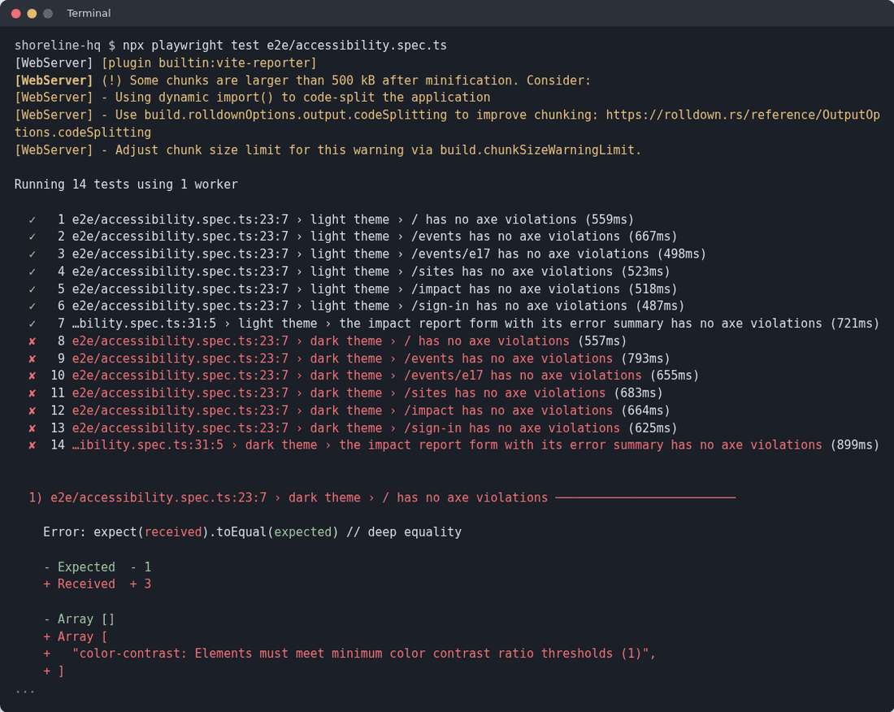
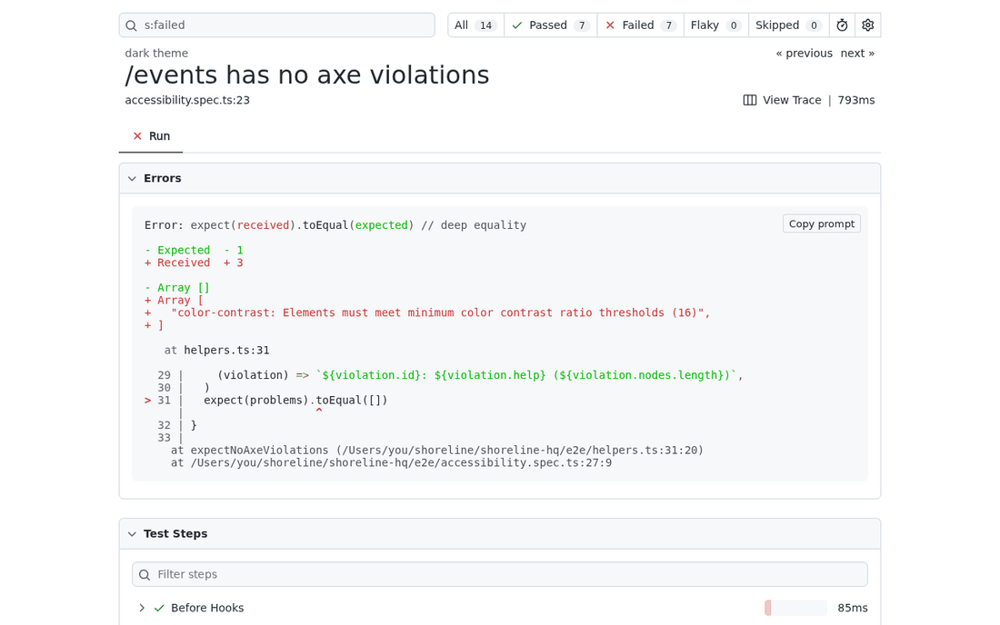

🎭 Lesson 9.3: End-to-End and Accessibility Tests
Your 46 tests run the HQ in a pretend browser against the API's code inside the test run, and they are fast because of it. But no organizer has ever used the HQ in jsdom. Today the tests leave the training beach: a real Chromium opens the real build, talks to the real shoreline-api server, uploads a real photo from your disk and reloads the page to prove the server kept what it was sent. Then a robot accessibility checker reads every key page, in light mode and in dark mode, and you finish Module 9 with a clear answer to the question every team argues about: which test belongs where?
🎯 Learning Objectives
By the end of this lesson, you will be able to:
- Set up Playwright so one command builds the HQ, starts or reuses shoreline-api and the preview server, and runs the tests in Chromium
- Write end-to-end tests with locators by role and label, auto-waiting actions and web-first assertions, and read their failures
- Keep tests that share one real server independent: a reset before every test, one test at a time, and a clean API afterwards
- Run axe accessibility checks on the HQ's key pages in both themes, and explain what automated checks can and cannot find
- Decide for any behavior whether it needs a unit, component or end-to-end test, and why most of a suite should not be end-to-end
📦 Code for this lesson
Starting code: lesson-31-start.zip · Finished code: lesson-31-end.zip. Each folder has a README with the commands to run it. The finished code includes the photo the tests upload, in e2e/files.
In This Lesson
🌐 Why a Real Browser
Lesson 9.2 ended with two honest gaps. jsdom could not send a real file through Node's fetch, so the upload test answered for itself, and it did not know the <search> element that browsers have had for a while. Neither gap is jsdom's fault: it is a pretend browser. It has no layout (nothing has a size), it downloads no pictures, it does not apply your CSS colors, and it never talks to a server that keeps data after the test. An end-to-end test (e2e for short) closes those gaps by running the whole system the way a person meets it: a real browser, the real build of the app, the real API server.
💡 Mental model: the dress rehearsal on the real beach
Lesson 9.2's mock API was the training beach: same rules, safe, reset in a second. Before the big Coastal Cleanup Day the crew still walks the real beach once: the real parking lot, the real tide, the real sign-in table with the real clipboard. Nobody does that walk for every small decision, because it takes a morning. But it is the only way to find out that the gate is locked on Saturdays. End-to-end tests are that walk: few, slow, and the only tests that see the whole thing.
Your test code runs in Node, and it remote-controls a real Chromium. The browser loads the HQ's production build from vite preview and sends its requests to node server.ts, the same server you have run since Lesson 1.2. The dashed line is new: before each test, the test itself asks the API to put its sample data back.
🌱 Why this matters
"We had tests, and it still broke in production" usually means the tests never ran the real thing together: the build, the browser, the server. A handful of end-to-end tests on the journeys that make the money (or, for the crew, that get the bags counted) is standard practice on professional teams, and Playwright is one of the most common tools for it. If the first run feels slow or a test fails for a reason you do not understand yet, that is normal: e2e tests have more moving parts, so their failure messages tell you more. Read them slowly.
🎭 Playwright in Five Ideas
Playwright's test runner, @playwright/test, looks familiar after Vitest: test(), expect(), beforeEach(). What is different is what a test gets and how it waits. Here is the whole first journey of the project, a guest searching for a cleanup:
import { expect, test } from '@playwright/test'
// ...
test('a guest finds a cleanup by searching', async ({ page }) => {
await page.goto('/')
await page.getByRole('navigation', { name: 'Main' }).getByRole('link', { name: 'Events' }).click()
await expect(page.getByRole('heading', { level: 1, name: 'Cleanup events' })).toBeVisible()
await page.getByLabel('Search cleanups').fill('pelican')
await expect(page.getByText('Found 3 cleanups: 1 coming up, 2 in the log.')).toBeVisible()
await expect(page).toHaveURL(/\?q=pelican$/)
await page.getByRole('link', { name: 'Pelican Point Beach Sweep' }).click()
await expect(page.getByRole('heading', { level: 1 })).toHaveText('Pelican Point Beach Sweep')
await expect(page.getByRole('heading', { name: 'Where to meet' })).toBeVisible()
})- Fixtures. A test asks for what it needs by name:
async ({ page }) => ….pageis a fresh browser tab in a fresh, empty browser profile (no cookies, no storage), made for this test and thrown away after it.request(used below to reset the API) sends HTTP requests from Node. The type of each fixture comes with the package: hoverpagein VS Code and you seePage. - Locators.
page.getByRole('link', { name: 'Pelican Point Beach Sweep' })is the same idea as Testing Library's queries, by role and accessible name, and you can chain them: the Events link inside the navigation named "Main". A locator is a description, not an element: it finds the element again each time it is used, so it never goes stale when React re-renders. - Actions wait.
click()andfill()wait until the element exists, is visible, is stable and can receive the action, for up to the test's timeout. There is nofindByand nowaitForto remember. - Web-first assertions retry.
await expect(locator).toBeVisible()keeps checking for up to 5 seconds until it is true. That is how the test waits out the search's 300 ms pause and the API's answer. Theawaitis required: these assertions return aPromise. - The config.
playwright.config.tssays where the tests are, which addresspage.goto('/')means, and how to start the servers (Step 2).
| In Vitest + Testing Library (9.1, 9.2) | In Playwright |
|---|---|
screen.getByRole('button', { name }) | page.getByRole('button', { name }) |
screen.getByLabelText('Email') | page.getByLabel('Email') |
await user.click(…), await user.type(…) | await locator.click(), await locator.fill('text') |
await screen.findByText(…) | await expect(page.getByText(…)).toBeVisible() |
expect(el).toHaveAttribute(…) (checks once) | await expect(locator).toHaveAttribute(…) (retries) |
user.upload(input, file) with a made-up File | locator.setInputFiles('path/to/photo.jpg') with a real file |
Same names, same philosophy ("find it the way a person would"), so everything you learned about roles and accessible names carries over. The selectors you will not see in this lesson are CSS classes and test ids: the HQ's CSS Module class names are hashed in the build anyway, and a role with a name is both sturdier and a free accessibility check.
🏖️ One Real Server, a Fresh Beach for Every Test
A real server keeps what it is sent. That is the point (the check-in test reloads the page to prove it), and it is also the trap: a test that plans a cleanup leaves 18 cleanups behind, and the next test that expects 17 fails, or passes only when it happens to run first. Tests must not depend on each other's leftovers. The HQ's tests follow three rules:
- Reset before every test. shoreline-api has a development endpoint for exactly this,
POST /api/_reset, which puts the sample data back (the same thing a server restart does). Every spec file starts withtest.beforeEachcallingresetApi(request)from a small shared file. - One test at a time. Playwright normally runs test files in parallel, in several worker processes. With one shared server, a reset in one worker would wipe the data another worker's test is in the middle of using.
workers: 1in the config keeps them in a line. (Big teams give each worker its own server or its own account instead; for 19 tests, a line is simpler.) - Leave the beach as you found it. After the last test, a
globalTeardownfile resets the API once more, so the server you develop against does not keep "Dune Grass Cleanup" from the last run.
/** Where shoreline-api listens while the end-to-end tests run */
export const API_URL = 'http://localhost:4000'
/** Put the API's sample data back, so every test starts on the same beach */
export async function resetApi(request: APIRequestContext): Promise<void> {
const response = await request.post(`${API_URL}/api/_reset`)
expect(response.ok()).toBe(true)
}
/** Sign in through the real form, the way an organizer does */
export async function signIn(page: Page, email = 'maya.okafor@example.com'): Promise<void> {
await page.goto('/sign-in')
await page.getByLabel('Email').fill(email)
await page.getByLabel('Password').fill('shoreline-demo')
await page.getByRole('button', { name: 'Sign in' }).click()
await expect(page.getByRole('button', { name: 'Sign out' })).toBeVisible()
}APIRequestContext is the type of the request fixture: Playwright's own HTTP client, which runs in Node, not in the page. signIn uses the real form on purpose: it is the same three steps a person takes, and every test that signs in tests the sign-in a little more.
⚠️ The tests reset YOUR running API
Playwright reuses a shoreline-api that is already running (Step 2), which is convenient and fast. It also means a test run puts the sample data back in the server you have open: if you had planned a cleanup by hand to try something, it is gone after npm run test:e2e. The data is sample data and lives only in memory anyway (Lesson 1.2), so nothing real is lost.
One more thing a real browser brings: a time zone. The HQ works out "today" from the browser's clock and time zone, and shoreline-api works it out in the crew's time zone, America/Los_Angeles (Lesson 9.2's FAQ). Playwright can give the browser any time zone, so the config sets timezoneId: 'America/Los_Angeles' and the two always agree, even if you live in Manila or Berlin. That is why these tests may use today's cleanup, Tide Pool Morning Cleanup, which the Vitest tests avoided.
♿ Automated Accessibility Checks with axe
In Lesson 3.6 you checked the HQ by hand with Lighthouse or the axe DevTools extension, and the lesson promised the same engine in automated tests. Here it is. axe-core is an open-source accessibility checker from Deque: injected into a page, it reads the rendered result (the real DOM, the real computed colors) and reports rule violations such as a field without a label, a button without a name, text without enough contrast, an aria-* attribute with a wrong value or two elements with the same id. @axe-core/playwright injects it into Playwright's page for you:
/** Run axe on the page as it is now and fail with one readable line per problem */
export async function expectNoAxeViolations(page: Page): Promise<void> {
const results = await new AxeBuilder({ page })
.withTags(['wcag2a', 'wcag2aa', 'wcag21a', 'wcag21aa', 'wcag22aa'])
.analyze()
const problems = results.violations.map(
(violation) => `${violation.id}: ${violation.help} (${violation.nodes.length})`,
)
expect(problems).toEqual([])
}withTags([…])limits the scan to the WCAG rules (2.0, 2.1 and 2.2, levels A and AA), the standard most accessibility laws and policies point to. Without tags, axe also runs its "best practice" rules, which are good advice but not requirements.- The
mapturns axe's large result objects into one line each, such ascolor-contrast: Elements must meet minimum color contrast ratio thresholds (3). Comparing that list with[]gives a failure message you can read at a glance (Step 7 shows one). - Both themes. Colors are the most common thing to break in dark mode, and only a real browser computes them. Playwright's
colorSchemeoption makes the browser report "dark" to the page, soprefers-color-schemeand the HQ'slight-dark()colors switch exactly as on a phone set to dark mode.
💡 A floor, not a ceiling
Automated tools find only part of what makes a page hard to use, often estimated at around a third to a half of real issues. axe can tell that a picture has no alt; it cannot tell whether the alt text says anything useful. It can tell that a button has a name; it cannot tell whether the focus goes somewhere sensible after the dialog closes, or whether the page makes sense read aloud. Keep the manual checks from Lesson 3.6 before every release: the keyboard alone (Tab, Enter, Space, Esc), the focus always visible, one journey with a screen reader (NVDA on Windows, VoiceOver on a Mac with ⌘ Cmd+F5), and the page zoomed to 200 percent. What axe gives you is that the problems it can find never come back unnoticed.
A scan only checks what is on the screen at that moment, so the HQ's accessibility tests first wait for each page's heading (not the "Loading…" message), and one test opens the impact report form's error summary before scanning, because error states are where contrast and labeling go wrong most often.
🧭 What to Test Where
You now have three kinds of tests, and the same behavior could often be tested at any of them. The question is what each one costs and what it can see. Measured on the HQ: the 46 Vitest tests run in about 2 seconds together; the 19 Playwright tests take about 15 seconds, build included, when shoreline-api is already running.
| Kind | Runs | Can see | Cannot see | In the HQ |
|---|---|---|---|---|
| Unit (9.1) | One function, in Node, milliseconds | Every rule and edge case of that function | Anything on screen | schemas, listErrors, getAvailability, the reducer |
| Component (9.1, 9.2) | A component or page in jsdom, with the API's code inside the test | Roles, names, focus, clicks, requests sent and not sent, cache, error answers you choose | Layout, colors, real files, real browser elements, a server that keeps data | the edit form, the guards, uploads with 413/415, the optimistic rollback |
| End-to-end (9.3) | The build in Chromium against the real server, seconds each | The whole journey: real bytes, pictures, CSS, reloads, axe on real colors | Rare errors (hard to cause), every combination (too slow) | search, plan, check-in, impact report with a photo, axe in both themes |
The old picture for this is the testing pyramid: many unit tests at the bottom, fewer integration tests, a few end-to-end tests on top. Many React teams now describe a testing trophy instead, where the widest part is the middle, component and integration tests like Lesson 9.2's, because they test what people do at a cost close to unit tests. Both shapes agree on the top: end-to-end tests are few and chosen. A rule of thumb for any new behavior:
- Is it a rule with many cases (a date check, a total, a permission rule)? Unit test it, every case.
- Is it what someone sees or does on one screen, including errors and "nothing must be sent"? Component test with MSW.
- Does it only work when everything is real together (files, layout, a reload, the deployed build, a critical journey)? One end-to-end test for the main path, and leave its edge cases to the levels below.
That is why the e2e impact test checks one good report with one good photo, and not the GIF or the 413: Lesson 9.2 already pinned those down faster.
⚠️ Common Mistakes
⚠️ A locator that matches more than one element
await expect(page.getByText('Pelican Point')).toBeVisible()"Pelican Point" is in a cleanup's title, in the meeting point of every cleanup at that beach and in a button's hidden label. Measured:
Expected output (shortened)
Error: expect(locator).toBeVisible() failed
Locator: getByText('Pelican Point')
Expected: visible
Error: strict mode violation: getByText('Pelican Point') resolved to 5 elements:
1) <p>Pelican Point Beach: Lifeguard tower 3</p> aka getByText('Pelican Point Beach:').first()
2) <p>Pelican Point Beach: Lifeguard tower 3</p> aka getByText('Pelican Point Beach:').nth(1)
3) <a href="/events/e04" data-discover="true">Pelican Point Beach Sweep</a> aka getByRole('link', { name: 'Pelican Point Beach Sweep' })
4) <p>Pelican Point Beach: Lifeguard tower 3</p> aka getByText('Pelican Point Beach:').nth(2)
5) <span class="_hidden_11rrh_2">for Pelican Point Beach Sweep</span> aka getByRole('button', { name: 'Show details for Pelican' })Playwright's locators are strict: an action or assertion that could mean several elements fails instead of guessing. Make the locator say which one you mean: a role and a full name (getByRole('link', { name: 'Pelican Point Beach Sweep' })), { exact: true }, or a narrower starting point such as page.getByRole('main'). The error lists what it found, which is often the fastest way to pick the right locator.
⚠️ Checking once instead of waiting
expect(await page.getByText('Found 3 cleanups').isVisible()).toBe(true)Measured, right after typing into the search box:
Expected output (shortened)
Error: expect(received).toBe(expected) // Object.is equality
Expected: true
Received: falseisVisible() answers "is it visible right now?", and right now the search is still in its 300 ms pause. Use the web-first assertion, await expect(locator).toBeVisible(), which keeps checking. The same goes for waitForTimeout(1000) ("wait a second, then look"): it is slow when the app is fast and flaky when the machine is slow. Wait for what you expect to see, never for a number of milliseconds.
⚠️ Browser types in a Node file
await expect.poll(() => picture.evaluate((img: HTMLImageElement) => img.naturalWidth)).toBe(1200)evaluate runs its function inside the browser, so this looks reasonable. Measured with npx tsc -b:
Expected output (shortened)
e2e/browse.spec.ts:29:52 - error TS2304: Cannot find name 'HTMLImageElement'.
29 await expect.poll(() => picture.evaluate((img: HTMLImageElement) => img.naturalWidth)).toBe(1200)
~~~~~~~~~~~~~~~~
The e2e files are checked by tsconfig.node.json, whose lib is ES2023 without DOM: from TypeScript's point of view these files run in Node, which has no HTMLImageElement. TypeScript is right about the file and Playwright is right about the function. Prefer Playwright's own assertions, which need no browser types: await expect(picture).toHaveJSProperty('naturalWidth', 1200) reads the property in the browser and retries. (Adding "DOM" to that tsconfig's lib would also work, but then TypeScript would let you use document in Node code by mistake.)
⚠️ Vitest picking up the Playwright files
Lesson 9.1's include: ['src/**/*.test.{ts,tsx}'] in vite.config.ts looked like a detail. Measured without it, npx vitest run also finds e2e/*.spec.ts (Vitest's default pattern includes .spec files):
Expected output (shortened)
❯ e2e/check-in.spec.ts (0 test)
❯ e2e/browse.spec.ts (0 test)
❯ e2e/plan.spec.ts (0 test)
❯ e2e/impact.spec.ts (0 test)
❯ e2e/accessibility.spec.ts (0 test)
...
FAIL e2e/browse.spec.ts [ e2e/browse.spec.ts ]
Error: Playwright Test did not expect test.beforeEach() to be called here.
Most common reasons include:
- You are calling test.beforeEach() in a configuration file.
- You are calling test.beforeEach() in a file that is imported by the configuration file.
...
Test Files 5 failed | 12 passed (17)
Tests 46 passed (46)Two test runners, two folders, and each one told where to look: Vitest in src, Playwright in e2e (its testDir).
⚠️ No browser installed
The npm package is Playwright's code; the browsers are a separate download. Measured with the package installed but no browsers:
Expected output (shortened)
✘ 1 e2e/plan.spec.ts:13:1 › an organizer plans a cleanup and finds it in the list (35ms)
...
Error: browserType.launch: Executable doesn't exist at ~/.cache/ms-playwright/chromium_headless_shell-1254/chrome-headless-shell-linux64/chrome-headless-shell
╔════════════════════════════════════════════════════════════╗
║ Looks like Playwright was just installed or updated. ║
║ Please run the following command to download new browsers: ║
║ ║
║ npx playwright install ║
║ ║
║ <3 Playwright Team ║
╚════════════════════════════════════════════════════════════╝Do what the box says: npx playwright install chromium (Step 1). Each Playwright version needs its own browser build, so you will see this message again after updating @playwright/test.
🛠️ Project: The HQ in a Real Browser
Step 1 installs Playwright, axe and Chromium, Step 2 writes the config and the shared helpers, Steps 3 to 6 test four journeys, Step 7 adds the accessibility checks and breaks a color on purpose, and Step 8 runs everything and reads Playwright's report. Keep shoreline-api running in its own terminal, as always.
Step 1: Install Playwright, axe and a browser (12 min)
In shoreline-hq, install the two packages as development dependencies:
npm install --save-dev @playwright/test @axe-core/playwrightExpected output
added 5 packages, and audited 197 packages in 941ms
46 packages are looking for funding
run `npm fund` for details
found 0 vulnerabilitiesThe course was checked with @playwright/test 1.65.0 and @axe-core/playwright 4.14.0 (which brings axe-core 4.14). Then download the browser this Playwright version drives:
npx playwright install chromiumExpected output
Downloading Chrome for Testing 158.0.8127.18 (playwright chromium v1254) from https://cdn.playwright.dev/builds/cft/158.0.8127.18/linux64/chrome-linux64.zip
197.8 MiB [====================] 100% 0.0s
Chrome for Testing 158.0.8127.18 (playwright chromium v1254) downloaded to ~/.cache/ms-playwright/chromium-1254
Downloading FFmpeg (playwright ffmpeg v1013) from https://cdn.playwright.dev/dbazure/download/playwright/builds/ffmpeg/1013/ffmpeg-linux.zip
2.2 MiB [====================] 100% 0.0s
FFmpeg (playwright ffmpeg v1013) downloaded to ~/.cache/ms-playwright/ffmpeg-1013
Downloading Chrome Headless Shell 158.0.8127.18 (playwright chromium-headless-shell v1254) from https://cdn.playwright.dev/builds/cft/158.0.8127.18/linux64/chrome-headless-shell-linux64.zip
125.9 MiB [====================] 100% 0.0s
Chrome Headless Shell 158.0.8127.18 (playwright chromium-headless-shell v1254) downloaded to ~/.cache/ms-playwright/chromium_headless_shell-1254About 330 MB to download (Chromium and a lighter "headless shell" that runs without a window), stored once per computer in Playwright's cache folder (~/.cache/ms-playwright on Linux, ~/Library/Caches/ms-playwright on a Mac, %USERPROFILE%\AppData\Local\ms-playwright on Windows), not in your project. On Linux, if Chromium later complains about missing system libraries, npx playwright install-deps chromium installs them (it asks for your administrator password). Finally, add the script that runs the tests, in package.json:
"lint": "oxlint",
"preview": "vite preview",
- "test": "vitest"
+ "test": "vitest",
+ "test:e2e": "playwright test"
},
"dependencies": {Step 2: The config, the helpers and a clean exit (10 min)
Create playwright.config.ts next to vite.config.ts:
import { defineConfig } from '@playwright/test'
import { API_URL } from './e2e/helpers.ts'
export default defineConfig({
testDir: './e2e',
// One shoreline-api serves every test, and the tests change its data: one test at a time
workers: 1,
// A forgotten test.only must not hide the other tests on a CI service
forbidOnly: !!process.env.CI,
// After the last test, put the API's sample data back
globalTeardown: './e2e/global-teardown.ts',
reporter: [['list'], ['html', { open: 'never' }]],
use: {
baseURL: 'http://localhost:4173',
// The crew's time zone, so the browser's "today" is the API's "today"
timezoneId: 'America/Los_Angeles',
// Keep a step-by-step recording of every test that fails
trace: 'retain-on-failure',
},
// Playwright starts both servers (or reuses them if they are already running)
webServer: [
{
command: 'node server.ts --quiet',
cwd: '../shoreline-api',
url: `${API_URL}/api`,
reuseExistingServer: true,
},
{
command: 'npm run build && npm run preview -- --strictPort',
url: 'http://localhost:4173',
env: { VITE_API_URL: API_URL },
reuseExistingServer: true,
},
],
})webServeris a list of servers Playwright needs. For each, it checks theurl; if something answers, it uses that server (reuseExistingServer: true), otherwise it runs thecommand, waits for theurl, and stops the server after the tests. Sonpm run test:e2eworks whether or not your API is running.- The app is built first (
npm run build && npm run preview): end-to-end tests check what you would deploy, not the dev server.envgives the build the API's address, liketest.envdid for Vitest, so a missing or different.env.localcannot change what the tests talk to.--strictPortmakes preview fail loudly instead of quietly moving to another port. One thing to know: a preview you left running is reused as it is, without a new build. Stop old preview servers before an e2e run. reporter:listprints each test in the terminal;htmlwrites a report you can open in a browser (Step 8).trace: 'retain-on-failure'records every failing test step by step.forbidOnly:test.onlyruns one test while you work on it. Left in by accident, it would silently skip all the others, so on a CI service (which sets theCIenvironment variable, Lesson 10.2) it becomes an error.
Create e2e/helpers.ts with the three helpers from "One Real Server" and "Automated Accessibility Checks" (the complete file is in the finished code), and the teardown:
// Runs once after the last test: leave the beach as you found it. The API you develop against
// gets its sample data back instead of keeping whatever the tests created.
import { request } from '@playwright/test'
import { resetApi } from './helpers.ts'
export default async function globalTeardown(): Promise<void> {
const api = await request.newContext()
await resetApi(api)
await api.dispose()
}The teardown runs outside any test, so it has no request fixture: request.newContext() makes an HTTP client by hand, and dispose() closes it. TypeScript checks the e2e files like vite.config.ts, with the Node settings, so add them to tsconfig.node.json:
"noFallthroughCasesInSwitch": true
},
- "include": ["vite.config.ts"]
+ "include": ["vite.config.ts", "playwright.config.ts", "e2e"]
}Playwright writes results (test-results) and the report (playwright-report) into the project; they do not belong in Git. In .gitignore, after *.local:
*.local
+# Playwright's results and reports
+test-results
+playwright-report
+
# Editor directories and files
.vscode/*Vitest stays out of e2e thanks to the include line from Lesson 9.1 (Common Mistakes shows what happens without it). Run npx tsc -b and npm run lint: both clean.
Step 3: A guest finds a cleanup (8 min)
Create e2e/browse.spec.ts:
import { expect, test } from '@playwright/test'
import { resetApi } from './helpers.ts'
test.beforeEach(async ({ request }) => {
await resetApi(request)
})
test('a guest finds a cleanup by searching', async ({ page }) => {
await page.goto('/')
await page.getByRole('navigation', { name: 'Main' }).getByRole('link', { name: 'Events' }).click()
await expect(page.getByRole('heading', { level: 1, name: 'Cleanup events' })).toBeVisible()
await page.getByLabel('Search cleanups').fill('pelican')
await expect(page.getByText('Found 3 cleanups: 1 coming up, 2 in the log.')).toBeVisible()
await expect(page).toHaveURL(/\?q=pelican$/)
await page.getByRole('link', { name: 'Pelican Point Beach Sweep' }).click()
await expect(page.getByRole('heading', { level: 1 })).toHaveText('Pelican Point Beach Sweep')
await expect(page.getByRole('heading', { name: 'Where to meet' })).toBeVisible()
})
test('the beach sites show their real pictures', async ({ page }) => {
await page.goto('/sites')
const pictures = page.getByRole('main').getByRole('img')
await expect(pictures).toHaveCount(6)
// A real browser downloads and decodes each picture: naturalWidth is its real width in pixels
for (const picture of await pictures.all()) {
await picture.scrollIntoViewIfNeeded()
await expect(picture).toHaveJSProperty('naturalWidth', 1200)
}
})The first test is the search from "Playwright in Five Ideas", plus toHaveURL: the filter really is in the address bar (Lesson 6.2). The second does something no jsdom test could: it waits for each of the six site pictures to be downloaded from shoreline-api and decoded by the browser at its real width of 1200 pixels. A broken image URL would leave naturalWidth at 0. Run just this file:
npx playwright test e2e/browse.spec.tsExpected output
[WebServer] [plugin builtin:vite-reporter]
[WebServer] (!) Some chunks are larger than 500 kB after minification. Consider:
[WebServer] - Using dynamic import() to code-split the application
[WebServer] - Use build.rolldownOptions.output.codeSplitting to improve chunking: https://rolldown.rs/reference/OutputOptions.codeSplitting
[WebServer] - Adjust chunk size limit for this warning via build.chunkSizeWarningLimit.
Running 2 tests using 1 worker
✓ 1 e2e/browse.spec.ts:8:1 › a guest finds a cleanup by searching (651ms)
✓ 2 e2e/browse.spec.ts:22:1 › the beach sites show their real pictures (361ms)
2 passed (4.4s)
To open last HTML report run:
npx playwright show-reportThe [WebServer] lines are the build's own output: the 500 kB warning is Lesson 8.1's, and Lesson 10.1 fixes it. If the build fails, the tests do not start, and the build's error is what you read.
🧩 Version note: the first run can be slow
Measured on the machine this course was checked on (Windows with WSL): the first run in a freshly installed copy of the project took two to two and a half minutes before the first test started, even with shoreline-api running. Runs while shoreline-api was not running took as long, because Playwright's "is something already on port 4000?" check hung there before it started the API itself. Every later run took about 4 seconds per file plus the build, and the whole suite about 15 seconds. If a first run seems stuck before "Running…", give it a few minutes, and keep shoreline-api running in its terminal.
Step 4: Maya plans a cleanup (8 min)
Create e2e/plan.spec.ts:
import { expect, test } from '@playwright/test'
import { resetApi, signIn } from './helpers.ts'
test.beforeEach(async ({ request }) => {
await resetApi(request)
})
/** A date four weeks from now as YYYY-MM-DD: far enough ahead that time zones never matter */
function fourWeeksFromNow(): string {
return new Date(Date.now() + 28 * 24 * 60 * 60 * 1000).toISOString().slice(0, 10)
}
test('an organizer plans a cleanup and finds it in the list', async ({ page }) => {
await signIn(page)
await page.getByRole('navigation', { name: 'Main' }).getByRole('link', { name: 'Events' }).click()
await page.getByRole('link', { name: 'Plan a cleanup' }).click()
await page.getByLabel('Title (5 to 80 characters)').fill('Dune Grass Cleanup')
await page.getByLabel('Beach site').selectOption({ label: 'Long Strand Beach' })
await page.getByLabel('Date').fill(fourWeeksFromNow())
await page.getByLabel('Starts').fill('09:00')
await page.getByLabel('Ends').fill('11:30')
await page.getByLabel('Volunteers needed (1 to 200)').fill('12')
await page.getByLabel('Meeting point').fill('North end of the boardwalk')
await page.getByRole('button', { name: 'Publish' }).click()
// The app moves on to the new cleanup's own page
await expect(page.getByRole('heading', { level: 1 })).toHaveText('Dune Grass Cleanup')
await expect(page).toHaveTitle('Dune Grass Cleanup · Shoreline Crew HQ')
await expect(page.getByText('North end of the boardwalk')).toBeVisible()
// ...and the real API kept it: the list now has 18 cleanups
await page.getByRole('link', { name: '← All cleanups' }).click()
await expect(page.getByText(/^Found 18 cleanups/)).toBeVisible()
await expect(page.getByRole('link', { name: 'Dune Grass Cleanup' })).toBeVisible()
})selectOption({ label })picks an option by its visible text, andfill()on a date input takesYYYY-MM-DD, whatever format the browser shows.- The date is four weeks ahead, computed in the test, so the form's "today or later" rule never depends on when the test runs. (Converting to UTC can shift the date by a day; four weeks ahead, that does not matter.)
- The journey ends where a person would check: the new page (heading and the browser tab's title), then the list, which now says 18 because the real API saved the cleanup. The next test's reset brings it back to 17.
Expected output (from npx playwright test e2e/plan.spec.ts)
[WebServer] [plugin builtin:vite-reporter]
[WebServer] (!) Some chunks are larger than 500 kB after minification. Consider:
[WebServer] - Using dynamic import() to code-split the application
[WebServer] - Use build.rolldownOptions.output.codeSplitting to improve chunking: https://rolldown.rs/reference/OutputOptions.codeSplitting
[WebServer] - Adjust chunk size limit for this warning via build.chunkSizeWarningLimit.
Running 1 test using 1 worker
✓ 1 e2e/plan.spec.ts:13:1 › an organizer plans a cleanup and finds it in the list (632ms)
1 passed (3.9s)
To open last HTML report run:
npx playwright show-reportStep 5: The check-in desk survives a reload (6 min)
Create e2e/check-in.spec.ts:
import { expect, test } from '@playwright/test'
import { resetApi, signIn } from './helpers.ts'
test.beforeEach(async ({ request }) => {
await resetApi(request)
})
test('an organizer checks a volunteer in, and the mark survives a reload', async ({ page }) => {
await signIn(page)
await page.goto('/events/e17')
// Today's cleanup opens on the check-in desk
await expect(page.getByRole('tab', { name: 'Check-in desk' })).toHaveAttribute('aria-selected', 'true')
const checkIn = page.getByRole('button', { name: 'Check in for Diego Herrera' })
await checkIn.click()
await expect(checkIn).toHaveAttribute('aria-pressed', 'true')
await expect(page.getByText('Checked in: 1 of 7.')).toBeVisible()
// A reload throws away everything the browser remembered: what comes back, the API saved
await page.reload()
await expect(page.getByRole('button', { name: 'Check in for Diego Herrera' })).toHaveAttribute(
'aria-pressed',
'true',
)
await expect(page.getByText('Checked in: 1 of 7.')).toBeVisible()
})Lesson 7.2's check-in is optimistic: the button is pressed at once, before the API answers. In Lesson 9.2 a test proved the rollback. Here, page.reload() proves the other half: the page is thrown away and loaded fresh, the cache is empty, and the mark comes back from the server. Only the session survives the reload, because sessionStorage lasts as long as the tab (Lesson 5.2). Expected output: 1 passed.
Step 6: An impact report with a real photo (10 min)
Put a JPEG in e2e/files/: the finished code has bags-at-the-stairs.jpg (800 by 600 pixels, 15 KB), and any photo of your own under 5 MB works if you change the file name and the width in the test. Then create e2e/impact.spec.ts:
import { expect, test } from '@playwright/test'
import { resetApi, signIn } from './helpers.ts'
test.beforeEach(async ({ request }) => {
await resetApi(request)
})
test('an organizer reports today\'s impact with a photo and sees the new totals', async ({ page }) => {
await signIn(page)
await page.goto('/impact')
await expect(page.getByRole('definition').filter({ hasText: 'kg' })).toHaveText('176.2 kg')
await page.goto('/events/e17')
await page.getByRole('link', { name: 'Report the impact' }).click()
await page.getByLabel('Volunteers who came').fill('11')
await page.getByLabel('Bags filled').fill('6')
await page.getByLabel('Weight (kg)').fill('18.5')
await page.getByLabel('Pieces, row 1').fill('40')
// A real file from disk, sent to the real API as multipart form data
await page.getByLabel(/^Add a photo/).setInputFiles('e2e/files/bags-at-the-stairs.jpg')
const preview = page.getByRole('listitem').filter({ hasText: 'bags-at-the-stairs.jpg' }).locator('img')
// The API stored the bytes and serves them back: the browser decodes an 800 x 600 picture
await expect(preview).toHaveJSProperty('naturalWidth', 800)
await page.getByRole('button', { name: 'Save the report' }).click()
await expect(page.getByRole('heading', { level: 1 })).toHaveText('Tide Pool Morning Cleanup')
await page.getByRole('tab', { name: 'Impact' }).click()
await expect(page.getByText('Volunteers: 11. Bags: 6. Weight: 18.5 kg.')).toBeVisible()
await expect(page.getByText('Photos uploaded with the report: 1.')).toBeVisible()
await page.getByRole('navigation', { name: 'Main' }).getByRole('link', { name: 'Impact' }).click()
await expect(page.getByRole('definition').filter({ hasText: 'kg' })).toHaveText('194.7 kg')
})setInputFiles(path)chooses a real file from your disk, relative to where you run Playwright (shoreline-hq). The browser reads the bytes, the HQ'spostPhotosends them as multipart form data, and shoreline-api stores them: the upload Lesson 9.2 could not do.- The preview check closes the loop: the
<img>in the list loads the photo back from the API, and the browser decodes it at 800 pixels wide. The preview hasalt=""(the file name beside it says what it is, Lesson 8.2), so it has noimgrole; the test finds it inside the list item that has the file name. - The totals are checked before and after on the public impact page: 176.2 kg in the sample data, 194.7 kg after this report's 18.5 kg.
getByRole('definition')finds a<dd>, andfilter({ hasText: 'kg' })keeps the one with the weight.
Expected output (from npx playwright test e2e/impact.spec.ts)
[WebServer] [plugin builtin:vite-reporter]
[WebServer] (!) Some chunks are larger than 500 kB after minification. Consider:
[WebServer] - Using dynamic import() to code-split the application
[WebServer] - Use build.rolldownOptions.output.codeSplitting to improve chunking: https://rolldown.rs/reference/OutputOptions.codeSplitting
[WebServer] - Adjust chunk size limit for this warning via build.chunkSizeWarningLimit.
Running 1 test using 1 worker
✓ 1 e2e/impact.spec.ts:8:1 › an organizer reports today's impact with a photo and sees the new totals (676ms)
1 passed (4.0s)
To open last HTML report run:
npx playwright show-reportStep 7: axe on seven pages, light and dark (10 min)
Create e2e/accessibility.spec.ts:
import { expect, test } from '@playwright/test'
import { expectNoAxeViolations, resetApi, signIn } from './helpers.ts'
/** Pages anyone can open, and the heading that says each one has loaded */
const publicPages = [
{ path: '/', heading: 'Shoreline Crew HQ' },
{ path: '/events', heading: 'Cleanup events' },
{ path: '/events/e17', heading: 'Tide Pool Morning Cleanup' },
{ path: '/sites', heading: 'Beach sites' },
{ path: '/impact', heading: 'Our impact' },
{ path: '/sign-in', heading: 'Sign in' },
]
for (const colorScheme of ['light', 'dark'] as const) {
test.describe(`${colorScheme} theme`, () => {
test.use({ colorScheme })
test.beforeEach(async ({ request }) => {
await resetApi(request)
})
for (const { path, heading } of publicPages) {
test(`${path} has no axe violations`, async ({ page }) => {
await page.goto(path)
// Scan the page with its data, not the loading message
await expect(page.getByRole('heading', { level: 1, name: heading })).toBeVisible()
await expectNoAxeViolations(page)
})
}
test('the impact report form with its error summary has no axe violations', async ({ page }) => {
await signIn(page)
await page.goto('/events/e17/impact')
await page.getByLabel('Pieces, row 1').clear()
await page.getByRole('button', { name: 'Save the report' }).click()
await expect(page.getByRole('region', { name: /^Fix these/ })).toBeFocused()
await expectNoAxeViolations(page)
})
})
}Two loops write the tests: for each theme, a describe group with test.use({ colorScheme }), and inside it one test per page. as const keeps 'light' and 'dark' as literal types, which is what colorScheme accepts (a plain string would be a type error). Fourteen tests, all passing:
Expected output (from npx playwright test e2e/accessibility.spec.ts)
[WebServer] [plugin builtin:vite-reporter]
[WebServer] (!) Some chunks are larger than 500 kB after minification. Consider:
[WebServer] - Using dynamic import() to code-split the application
[WebServer] - Use build.rolldownOptions.output.codeSplitting to improve chunking: https://rolldown.rs/reference/OutputOptions.codeSplitting
[WebServer] - Adjust chunk size limit for this warning via build.chunkSizeWarningLimit.
Running 14 tests using 1 worker
✓ 1 e2e/accessibility.spec.ts:23:7 › light theme › / has no axe violations (578ms)
✓ 2 e2e/accessibility.spec.ts:23:7 › light theme › /events has no axe violations (676ms)
✓ 3 e2e/accessibility.spec.ts:23:7 › light theme › /events/e17 has no axe violations (521ms)
✓ 4 e2e/accessibility.spec.ts:23:7 › light theme › /sites has no axe violations (541ms)
✓ 5 e2e/accessibility.spec.ts:23:7 › light theme › /impact has no axe violations (518ms)
✓ 6 e2e/accessibility.spec.ts:23:7 › light theme › /sign-in has no axe violations (483ms)
✓ 7 e2e/accessibility.spec.ts:31:5 › light theme › the impact report form with its error summary has no axe violations (736ms)
✓ 8 e2e/accessibility.spec.ts:23:7 › dark theme › / has no axe violations (481ms)
✓ 9 e2e/accessibility.spec.ts:23:7 › dark theme › /events has no axe violations (624ms)
✓ 10 e2e/accessibility.spec.ts:23:7 › dark theme › /events/e17 has no axe violations (491ms)
✓ 11 e2e/accessibility.spec.ts:23:7 › dark theme › /sites has no axe violations (513ms)
✓ 12 e2e/accessibility.spec.ts:23:7 › dark theme › /impact has no axe violations (505ms)
✓ 13 e2e/accessibility.spec.ts:23:7 › dark theme › /sign-in has no axe violations (507ms)
✓ 14 e2e/accessibility.spec.ts:31:5 › dark theme › the impact report form with its error summary has no axe violations (803ms)
14 passed (11.5s)
To open last HTML report run:
npx playwright show-reportNow break something only a browser can see. A teammate "tidies up" src/index.css by using the light theme's gray for muted text in dark mode too. Change the dark value of --text-muted from #a9b4c0 to var(--muted), and run the file again:

Expected output (shortened)
✘ 8 e2e/accessibility.spec.ts:23:7 › dark theme › / has no axe violations (561ms)
...
1) e2e/accessibility.spec.ts:23:7 › dark theme › / has no axe violations ─────────────────────────
Error: expect(received).toEqual(expected) // deep equality
- Expected - 1
+ Received + 3
- Array []
+ Array [
+ "color-contrast: Elements must meet minimum color contrast ratio thresholds (1)",
...
7 failed
...
7 passed (15.3s)Every light test still passes, every dark test fails, and each failure names the rule and how many elements break it. Nothing else would have caught this: tsc and oxlint do not read colors, jsdom does not compute them, and on your own screen in light mode the HQ looks exactly the same. Put #a9b4c0 back.
Step 8: Run everything, and read the report (7 min)
Run the whole suite, then the unit and component tests to confirm they did not change:
npm run test:e2e
npx vitest run
Expected output (shortened, from npm run test:e2e)
Running 19 tests using 1 worker
✓ 1 e2e/accessibility.spec.ts:23:7 › light theme › / has no axe violations (548ms)
...
✓ 19 e2e/plan.spec.ts:13:1 › an organizer plans a cleanup and finds it in the list (545ms)
...
19 passed (13.9s)Vitest still reports 12 files and 46 tests: nothing from e2e. Your times will differ. Then open the report Playwright wrote:
npx playwright show-reportIt starts a small server and opens the report in your browser; stop it with Ctrl+C in the terminal. After a run with failures (try the dark-mode color again), each failing test in the report shows the error, the code line and the steps, with a trace to open:

Click View Trace to open Playwright's trace viewer: every action of the test on a timeline, with a snapshot of the page before and after each one, the console and the network requests. When an e2e test fails on a CI service where you cannot watch the browser, the trace is how you see what happened. Put the color back and run once more so the report is green.
✅ Project Completion Checklist
@playwright/testand@axe-core/playwrightare dev dependencies, Chromium is installed, andnpm run test:e2erunsplaywright testplaywright.config.tsbuilds and previews the app, starts or reuses shoreline-api, runs one worker in the crew's time zone and keeps traces of failures- Every spec resets the API before each test, and the global teardown leaves it clean
- Four journeys pass against the real server: a guest's search (and the real site pictures), planning a cleanup, a check-in that survives a reload, an impact report with a real photo and the new totals
- axe finds no WCAG A/AA violations on seven pages in light and dark mode, and you saw it catch a dark-mode contrast problem
- The 46 Vitest tests,
npx tsc -bandnpm run lintstill pass, and Vitest ignores thee2efolder
Your own project: for the app you will plan in Lesson 11.1, list its three most important journeys (the ones that, if broken, make the app useless) and, next to each, the one thing only a real browser could prove (a file, a reload, a picture, a color, a real server). Those three are your end-to-end tests; everything else goes to the faster levels.
🏋️ Hands-on Exercises
Exercise 1 is part of the lesson (about 6 minutes, included in the lesson time). Exercises 2 and 3 are optional stretches, not counted in the lesson time.
🏋️ Exercise 1: The events page on a phone, in the dark
Write e2e/phone.spec.ts: at 390 by 844 pixels in dark mode, the events page's search still works, the page cannot be scrolled sideways (nothing is wider than the screen), and axe finds no violations.
💡 Hint
test.use({ viewport: { width: 390, height: 844 }, colorScheme: 'dark' }) at the top of the file applies to every test in it. A page that cannot be scrolled sideways has an <html> element whose scrollWidth equals its clientWidth. Read one with locator.evaluate((element) => element.clientWidth) (the parameter's type comes from Playwright, so no browser types are needed), then assert the other with toHaveJSProperty.
✅ Solution
import { expect, test } from '@playwright/test'
import { expectNoAxeViolations, resetApi } from './helpers.ts'
test.use({ viewport: { width: 390, height: 844 }, colorScheme: 'dark' })
test.beforeEach(async ({ request }) => {
await resetApi(request)
})
test('the events page fits a phone and passes axe in the dark', async ({ page }) => {
await page.goto('/events')
await page.getByLabel('Search cleanups').fill('pelican')
await expect(page.getByText('Found 3 cleanups: 1 coming up, 2 in the log.')).toBeVisible()
// Nothing wider than the screen: the page cannot be scrolled sideways
const html = page.locator('html')
const clientWidth = await html.evaluate((element) => element.clientWidth)
await expect(html).toHaveJSProperty('scrollWidth', clientWidth)
await expectNoAxeViolations(page)
})Expected output
[WebServer] [plugin builtin:vite-reporter]
[WebServer] (!) Some chunks are larger than 500 kB after minification. Consider:
[WebServer] - Using dynamic import() to code-split the application
[WebServer] - Use build.rolldownOptions.output.codeSplitting to improve chunking: https://rolldown.rs/reference/OutputOptions.codeSplitting
[WebServer] - Adjust chunk size limit for this warning via build.chunkSizeWarningLimit.
Running 1 test using 1 worker
✓ 1 e2e/phone.spec.ts:10:1 › the events page fits a phone and passes axe in the dark (957ms)
1 passed (4.3s)
To open last HTML report run:
npx playwright show-reportMeasured: passes, type-checks and lints cleanly. The course's code continues without it. (The course's own checks measure every HQ page at 390 pixels in dark mode too: Lesson 3.6 made the layout fit.)
🏋️ Exercise 2: A signed-in page as a fixture (optional stretch)
Optional stretch, not counted in the lesson time. Three of your spec files start with the same reset and sign-in. Make Playwright do it: write e2e/fixtures.ts that exports a test with an extra fixture, organizerPage, a page where the API was reset and Maya has signed in. Use it in a new test where Theo Nakamura is marked as a no-show at today's desk.
💡 Hint
base.extend<CrewFixtures>({ organizerPage: async ({ page, request }, provide) => { … await provide(page) } }), where base is Playwright's test and CrewFixtures an interface describing your fixture's type. The second parameter hands the fixture to the test: everything before that call is setup, everything after it is cleanup. A test then asks for it by name: async ({ organizerPage: page }) => ….
✅ Solution
// e2e/fixtures.ts: a `test` that can hand out a page where Maya is already signed in
import { test as base, type Page } from '@playwright/test'
import { resetApi, signIn } from './helpers.ts'
interface CrewFixtures {
organizerPage: Page
}
export const test = base.extend<CrewFixtures>({
// Playwright's docs name the second parameter `use`; oxlint's React Hooks rule would mistake
// a call to `use` for React's use(), so it is called `provide` here
organizerPage: async ({ page, request }, provide) => {
await resetApi(request)
await signIn(page)
await provide(page)
},
})
export { expect } from '@playwright/test'import { expect, test } from './fixtures.ts'
test('the desk counts a no-show', async ({ organizerPage: page }) => {
await page.goto('/events/e17')
await page.getByRole('button', { name: 'No-show for Theo Nakamura' }).click()
await expect(page.getByText('No-shows: 1.')).toBeVisible()
})Measured: passes, type-checks and lints cleanly; not in the course's code. Playwright's own documentation calls that second parameter use. In the HQ, measured with npm run lint, that name meets oxlint's React Hooks rule, which takes any call to use for React 19's use():
Expected output (shortened)
× react-hooks(rules-of-hooks): React Hook "use" is called in function "Anonymous" that is neither a React function component nor a custom React Hook function. React component names must start with an uppercase letter. React Hook names must start with the word "use".
...
Found 0 warnings and 1 error.The rule is wrong here (it is not React's use), and renaming the parameter is the simplest fix. Fixtures are Playwright's answer to the "page objects" you may read about: shared setup that each test asks for by name, with types.
🏋️ Exercise 3 (Stretch): The check-in desk without a mouse
Optional stretch, not counted in the lesson time. Write a test that reaches Diego Herrera's Check in button with Tab alone, presses Space, and checks the mark and the count. It is a test of the focus order that axe cannot do.
💡 Hint
page.keyboard.press('Tab') moves the focus; await expect(locator).toBeFocused() checks where it is. Press Tab in a loop until the button has the focus, with an upper limit so a broken focus order fails instead of looping forever. locator.evaluate((button) => button.matches(':focus')) answers "does it have the focus now?" without browser types.
✅ Solution
import { expect, test } from '@playwright/test'
import { resetApi, signIn } from './helpers.ts'
test.beforeEach(async ({ request }) => {
await resetApi(request)
})
test('the check-in desk works with the keyboard alone', async ({ page }) => {
await signIn(page)
await page.goto('/events/e17')
const checkIn = page.getByRole('button', { name: 'Check in for Diego Herrera' })
await expect(checkIn).toBeVisible()
// Tab until the button has the focus, as a keyboard user would (at most 40 presses)
for (let presses = 0; presses < 40; presses++) {
if (await checkIn.evaluate((button) => button.matches(':focus'))) break
await page.keyboard.press('Tab')
}
await expect(checkIn).toBeFocused()
await page.keyboard.press('Space')
await expect(checkIn).toHaveAttribute('aria-pressed', 'true')
await expect(page.getByText('Checked in: 1 of 7.')).toBeVisible()
})Measured: passes, type-checks and lints cleanly; not in the course's code.
🎯 Quick Quiz
🎯 Check Your Understanding
Question 1: Right after fill('pelican'), a test runs expect(await page.getByText('Found 3 cleanups').isVisible()).toBe(true) and fails. Why?
Question 2: Why does the HQ's config say workers: 1?
Question 3: After a teammate's CSS change, the light-theme axe tests pass and the dark-theme ones fail with color-contrast. Which is true?
Question 4: A new rule: a photo bigger than 5 MB must be refused with the API's message. Where does its test belong?
Question 5: What does the check-in test's page.reload() prove that Lesson 9.2's tests could not?
❓ Common Questions at This Stage
Should the tests also run in Firefox and Safari's engine?
Playwright can drive Chromium, Firefox and WebKit (the engine behind Safari): add a projects list to the config with one entry per browser (Playwright's devices has ready-made settings such as devices['Desktop Firefox']) and install those browsers with npx playwright install firefox webkit. Every test then runs once per browser, so the time multiplies. Many teams run Chromium on every change and all three before a release. The course checks Chromium only.
Why test the production build instead of the dev server?
Because that is what organizers get. The build can differ from the dev server: code is bundled and minified, CSS is processed differently (Lesson 7.3's light-dark() is rewritten by the build), environment variables are fixed at build time. Testing npm run dev is faster to start and fine while you write a test, but the run that decides should use the build.
Can I save the sign-in once and reuse it, as Playwright's docs show?
Playwright's storageState saves a signed-in browser's cookies and localStorage to a file that other tests start from. The HQ keeps its session in sessionStorage (Lesson 5.2), which storageState does not save, and shoreline-api forgets sessions when it resets anyway. Signing in through the form takes well under a second here, so the course keeps it simple; Exercise 2's fixture removes the repetition.
What about Cypress?
Cypress is the other popular end-to-end tool, with a different style (commands that queue up instead of await, a test runner inside the browser). Both are good; the ideas in this lesson (real journeys, locators by role, waiting for what you expect, resetting data, few tests on the main paths) apply to both. Playwright is the course's choice because it is free and open source in full, runs every major engine, and its async/await style matches the rest of your TypeScript.
How do these tests run on a CI service like GitHub Actions?
That is Lesson 10.2. The short version: the service installs the packages with npm ci, installs Chromium (with npx playwright install --with-deps chromium), and runs npm run test:e2e; the config already starts both servers, and forbidOnly switches on because the service sets CI. Whether every change should wait for the e2e run, or only some, is a decision that lesson makes with you.
🌟 Going Further: Bonus Challenge
Run npx playwright codegen http://localhost:4173 with the preview running: Playwright opens a browser and writes test code while you click through the HQ. Record the "cancel a cleanup" journey (an organizer cancels Weekend Cove Cleanup through the confirm dialog), then compare the generated code with what you would write: which locators did it choose, which assertions are missing, and what would you rename? Generated code is a good first draft, never the final test.
📓 Learning Journal
Take five to ten minutes and jot down:
- Key concepts you learned today
- Techniques that clicked (and the ones that have not, yet)
- Questions or confusion to look up or bring to the next session
- Ideas to try on your own
- Progress and feelings: how did this lesson go for you?
✍️ This lesson's prompt: Look back at the two journeys you wrote down after Lesson 9.2, the ones that "only make sense in a real browser". Did today's tests cover them? Then draw the HQ's tests as a shape (pyramid, trophy, or something else) with the real numbers: 46 Vitest tests and 19 Playwright tests. Is that the shape you would want if the HQ went into real use, and what would you add first?
📝 Lesson Summary
🎓 Key Takeaways
- End-to-end tests run the real build in a real browser against the real server: they see files, pictures, colors, reloads and the deployed code, and they are slow, so they are few
- Playwright: fixtures (
page,request), locators by role and label (strict: one element), actions that wait, andawait expect(locator)…assertions that retry webServerbuilds and previews the app and starts or reuses the API;envfixes the API address;timezoneIdmakes the browser's today the API's today- Shared server, independent tests:
POST /api/_resetbefore each test,workers: 1, and aglobalTeardownthat leaves the API clean - axe with WCAG tags on every key page in both themes catches what tsc, lint and jsdom cannot; it is a floor, so keep the manual keyboard and screen-reader checks
- What to test where: rules in unit tests, screens and errors in component tests, a few critical journeys end to end
| If you want to… | Go to |
|---|---|
| Review the manual accessibility checks | Lesson 3.6: Styling and Accessible Components |
| Review the component tests and MSW | Lesson 9.2: Interactions and Async |
See every endpoint, including _reset | The shoreline-api reference |
| Look up locators and assertions | playwright.dev: Locators |
🏆 What You've Accomplished
- The HQ is tested the way organizers use it: in a real browser, on the production build, against the real shoreline-api
- A real photo travels from your disk through the browser to the API and back as a decoded picture
- Seven pages pass automated WCAG checks in both themes, and you watched them catch a dark-mode contrast bug nobody would have seen in light mode
- You can say, for any new behavior, which kind of test it needs and why
- Module 9 is complete: 46 unit and component tests plus 19 end-to-end tests guard the HQ
🔭 Looking Ahead
Module 10 ships the HQ. In Lesson 10.1: Performance and the Build you finally deal with the 500 kB warning your e2e runs have been printing: you look inside the build, split it so guests never download the organizer forms, and measure the difference. Your new tests are the safety net for that work: after splitting, npm run test:e2e proves every journey still loads its code. Then Lesson 10.2 deploys the HQ and makes a CI service run your type check, lint and tests on every change.
📋 Before the Next Lesson
- Make sure
npm run test:e2e(19 tests),npx vitest run(46),npx tsc -bandnpm run lintall pass - Note how long
npm run buildtakes and the size of the JavaScript file it prints: Lesson 10.1 starts from those numbers - Add your three most important journeys (and what only a real browser can prove for each) to your Lesson 11.1 notes
🌱 Encouragement for the Journey
Three lessons ago the HQ had no tests at all. Now it has a suite with a shape you chose on purpose: fast tests for every rule, interaction tests for every screen that matters, and a few real-browser journeys on top, with accessibility checked automatically in both themes. Many professional codebases have less. If end-to-end tests still feel fiddly, that is their nature: more moving parts, more ways to fail. You now know how to read those failures, and that skill is worth more than any single test.